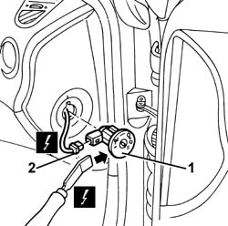
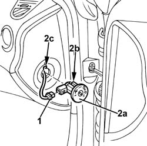

5580C26 LOCK BARREL KEY/SWITCH for deactivating passenger 'AIR BAG - R.R.
- Path
- Procedures > 55 ELECTRICAL EQUIPMENT > 5580 SPECIAL ACCESSORIES > 5580C air bag system > 5580C26 LOCK BARREL KEY/SWITCH for deactivating passenger 'AIR BAG - R.R.
- Kind
- repair procedure (removal / refitting; the operation number is the code)
- Applies to
- all engines; all production periods
- Interactive page
- https://sloeber94.github.io/elrnDB-a156/en/#/3238529
Applies to: all engines; all production periods
Applies to: all engines; all production periods
 Removing
Removing
 Refitting
RefittingOpen the right front side door.
1. Remove the switch using the special tool.
 | Name | Country |
|---|---|---|
1 | Scraper blade | 1.823.014.000 |
2. Disconnect the electrical connection.
 | Name | Connector |
|---|---|---|
2 | Passenger's Air Bag disablement switch |

Applies to: all engines; all production periods
Refitting
RemovingCheck that the switch is not damaged and, if necessary, conduct an electrical test on it.
1. Connect the electrical connection.
2. Fit switch (2a) by inserting reference tab (2b) into seat (2c).
Check system operation using the Examiner or another tester.
